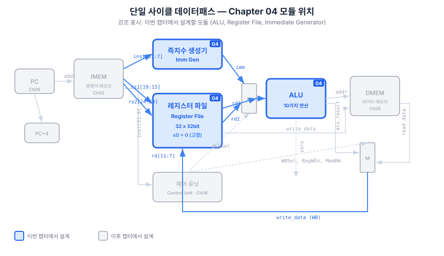
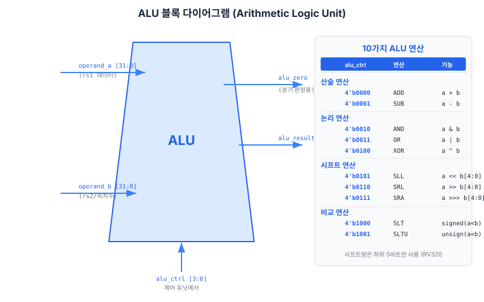
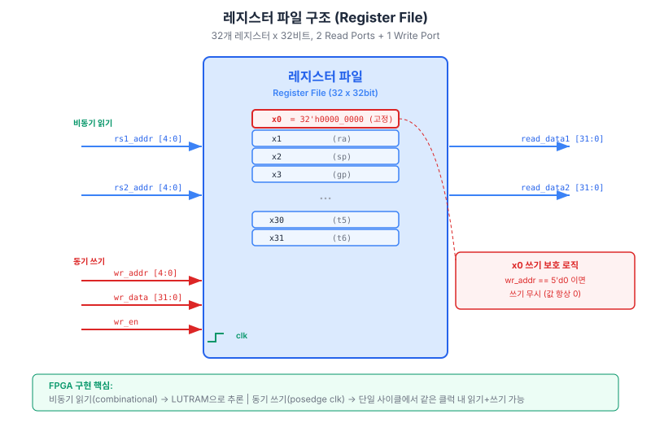
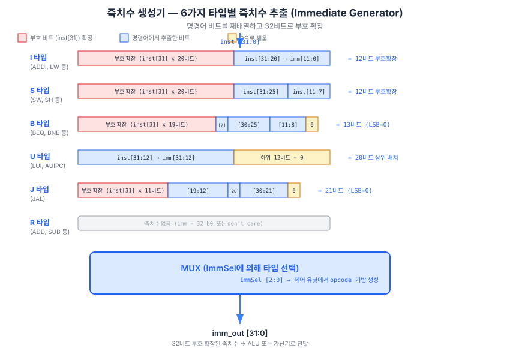

프로세서 설계의 핵심 구성 요소를 처음 SystemVerilog 코드로 구현하는 챕터입니다. ALU(산술 논리 장치, Arithmetic Logic Unit), 레지스터 파일(Register File), 즉치수 생성기(Immediate Generator) 세 모듈을 차례로 설계하고, 단위 테스트벤치(Testbench)로 동작을 검증합니다. 전체 데이터패스(Datapath)를 한 번에 설계하는 것이 아니라, 이 챕터에서는 이 세 모듈만 집중적으로 완성합니다. 다음 챕터에서 메모리 서브시스템을, 그 이후 챕터에서 제어 유닛을 추가하여 완전한 단일 사이클(Single-Cycle) 프로세서로 조립합니다.
처음 데이터패스 블록 다이어그램을 마주하는 순간, 많은 학습자가 압도감을 느낍니다. 멀티플렉서(Multiplexer), ALU, 레지스터 파일, PC 증가기, 제어 유닛, 메모리 인터페이스가 복잡하게 얽혀 있는 그림을 보면서 "이것을 모두 내가 만들어야 하나?"라는 불안감이 생깁니다. 이 챕터는 그 불안에 정면으로 답합니다.
RV32I 단일 사이클 프로세서의 데이터패스는 크게 다섯 영역으로 구성됩니다. 명령어 메모리(Instruction Memory), 레지스터 파일, ALU, 데이터 메모리(Data Memory), 그리고 PC 제어 회로입니다. 이 중 이번 챕터에서 구현하는 세 모듈은 다음과 같습니다.

세 모듈이 어떻게 협력하는지 add x3, x1, x2 명령어 실행 시나리오로 살펴봅니다.
rs1=x1, rs2=x2,
rd=x3 필드를 추출합니다.
rf[1]과
rf[2]의 현재 값을 조합 논리로 즉시 출력합니다.
alu_ctrl = ALU_ADD 신호를 공급합니다.
rf[3]에 결과를 씁니다.
즉치수 생성기는 R-type 명령어에서는 사용되지 않습니다.
I-type 명령어인 addi x3, x1, 10에서는 즉치수 생성기가 10을 32비트로
부호 확장한 뒤 ALU의 두 번째 입력으로 공급합니다.
멀티플렉서가 레지스터 값과 즉치수 중 하나를 선택하는 역할을 맡으며,
이 멀티플렉서는 챕터 6의 제어 유닛 설계에서 다룹니다.
복잡한 시스템을 설계할 때 가장 중요한 원칙은 관심사 분리(Separation of Concerns)입니다. 각 모듈은 명확히 정의된 포트 인터페이스를 통해서만 상호 작용하고, 내부 구현은 독립적으로 검증합니다. 레고(LEGO) 블록을 조립하듯, 검증된 모듈을 상위 수준에서 연결하면 전체 시스템을 단계적으로 구축할 수 있습니다.
ALU는 프로세서에서 가장 집중적으로 사용되는 조합 논리 회로입니다.
두 32비트 피연산자 a와 b를 입력받고,
4비트 제어 신호 alu_ctrl에 따라 10가지 연산 중 하나를 수행하여
32비트 결과 result와 1비트 zero 플래그를 출력합니다.
RV32I 명령어 중 ALU를 사용하는 것들을 나열해 보면 다음과 같습니다.
R-type 명령어(ADD, SUB, AND, OR, XOR, SLL, SRL, SRA, SLT, SLTU)는
10가지 연산에 일대일로 대응합니다.
I-type 즉치수 산술 명령어(ADDI, ANDI, ORI, XORI, SLLI, SRLI, SRAI, SLTI, SLTIU)는
b 입력이 레지스터 대신 즉치수로 바뀔 뿐, ALU 연산 자체는 동일합니다.
로드/스토어 명령어의 주소 계산(base + offset)에는 ADD 연산이 사용됩니다.
분기(Branch) 명령어의 조건 판정에도 ALU가 동원됩니다.
(BEQ/BNE는 SUB 결과의 zero 여부, BLT/BGE는 SLT 결과를 활용합니다.)

alu_ctrl이 10가지 연산 경로 중 하나를 선택하고, zero 플래그는 분기 조건 판정에 사용됩니다.localparam 활용
4비트 제어 코드를 "매직 넘버(Magic Number)"로 코드 전체에 직접 적으면
유지 보수 시 오류가 발생하기 쉽습니다.
예를 들어, 4'b0000이 ADD인지 OR인지 코드만 봐서는 알기 어렵습니다.
localparam으로 이름 있는 상수를 정의하면,
코드 가독성이 높아지고 리팩터링(Refactoring) 시 한 곳만 수정하면 됩니다.
아래 코드는 10가지 ALU 연산 코드를 localparam으로 정의하고,
always_comb 블록 안의 case문으로 연산을 선택합니다.
always_comb는 SystemVerilog IEEE 1800-2017에서 도입된 구문으로,
민감도 목록(Sensitivity List)을 자동으로 생성하여 조합 논리 설계 오류를 방지합니다.
// ALU — 10가지 연산 지원
// 연산 코드: 4비트 (ch06에서 제어 신호와 연결)
module alu (
input logic [31:0] a, b, // 피연산자
input logic [3:0] alu_ctrl, // 연산 선택
output logic [31:0] result, // 결과
output logic zero // 비교용 zero 플래그
);
// ALU 연산 코드 정의
localparam ALU_ADD = 4'b0000;
localparam ALU_SUB = 4'b0001;
localparam ALU_AND = 4'b0010;
localparam ALU_OR = 4'b0011;
localparam ALU_XOR = 4'b0100;
localparam ALU_SLL = 4'b0101;
localparam ALU_SRL = 4'b0110;
localparam ALU_SRA = 4'b0111;
localparam ALU_SLT = 4'b1000;
localparam ALU_SLTU = 4'b1001;
always_comb begin
case (alu_ctrl)
ALU_ADD: result = a + b;
ALU_SUB: result = a - b;
ALU_AND: result = a & b;
ALU_OR: result = a | b;
ALU_XOR: result = a ^ b;
ALU_SLL: result = a << b[4:0]; // 하위 5비트만 시프트 양으로 사용
ALU_SRL: result = a >> b[4:0]; // 논리 우측 시프트 (0으로 채움)
ALU_SRA: result = $signed(a) >>> b[4:0]; // 산술 우측 시프트 (부호 비트로 채움)
ALU_SLT: result = {31'b0, $signed(a) < $signed(b)}; // 부호 있는 비교
ALU_SLTU: result = {31'b0, a < b}; // 부호 없는 비교
default: result = 32'b0;
endcase
end
// zero 플래그 — BEQ/BNE 분기 조건 판정에 사용
assign zero = (result == 32'b0);
endmodule
a + b와 a - b는 SystemVerilog에서 무부호(Unsigned) 32비트 덧셈/뺄셈으로
합성됩니다. 오버플로(Overflow)는 자동으로 버려집니다(32비트 결과만 보존).
RISC-V 사양은 정수 오버플로를 예외(Exception)로 처리하지 않으므로, 이 동작이 올바릅니다.
ADD와 SUB는 opcode와 funct3가 동일하고 funct7[5]로만 구별됩니다.
따라서 제어 유닛이 이 비트를 관찰하여 alu_ctrl의 최하위 비트를 결정합니다
(챕터 6에서 다룸).
비트 단위(Bitwise) 논리 연산입니다. 마스킹(Masking, AND), 비트 세트(OR), 비트 토글(XOR) 등
시스템 프로그래밍에서 빈번히 사용됩니다. SystemVerilog 연산자 &, |,
^는 각각 AND, OR, XOR에 대응합니다.
시프트 양은 b[4:0] 하위 5비트만 사용합니다.
32비트 값을 32비트 이상 시프트하면 결과가 항상 0이 되므로,
RISC-V 사양은 시프트 양을 5비트(0~31)로 제한합니다.
b[31:5]의 상위 비트는 시프트 연산에서 무시됩니다.
SRA(산술 우측 시프트, Shift Right Arithmetic)는 음수를 오른쪽으로 시프트할 때
부호 비트(a[31])를 복제하여 채웁니다.
이는 2의 보수(Two's Complement) 음수를 2의 거듭제곱으로 나누는 효과를 냅니다.
SystemVerilog에서는 $signed(a) >>> b[4:0]으로 표현합니다.
반드시 $signed() 캐스팅을 적용해야 합니다.
캐스팅 없이 a >>> b[4:0]으로 쓰면, a가 logic
타입(기본적으로 무부호)이므로 논리 우측 시프트(SRL)와 동일하게 동작합니다.
SLT(Set Less Than)는 a < b이면 결과를 1, 아니면 0으로 설정합니다.
{31'b0, condition} 표현은 1비트 비교 결과를 32비트로 패딩(Padding)하는
관용 표현입니다.
SLT는 부호 있는 비교($signed(a) < $signed(b))를, SLTU는
부호 없는 비교(a < b, 즉 무부호 32비트 비교)를 수행합니다.
예를 들어 0xFFFF_FFFF는 부호 있는 해석으로는 -1이지만,
부호 없는 해석으로는 4,294,967,295입니다.
SLT로는 0xFFFF_FFFF < 0이 참이지만,
SLTU로는 0xFFFF_FFFF < 0이 거짓입니다.
zero 플래그는 result == 0일 때 1이 됩니다.
이 플래그는 분기 명령어에서 핵심적인 역할을 합니다.
BEQ(Branch if Equal) 명령어는 두 레지스터의 값이 같은지 판단해야 하는데,
a - b == 0이면 두 값이 같습니다.
ALU를 SUB 모드로 동작시키고 zero 플래그를 확인하면 됩니다.
BNE는 !zero 조건으로 구현됩니다.
BLT는 ALU를 SLT 모드로 동작시키고 result[0] == 1을 확인합니다.
Vivado로 이 ALU를 Basys 3(xc7a35tcpg236-1) 대상으로 합성하면
약 96개의 LUT(Look-Up Table)와 1개의 캐리 체인(Carry Chain)이 사용됩니다.
10-way case문은 하드웨어에서 멀티플렉서 트리로 매핑됩니다.
크리티컬 패스(Critical Path)는 보통 덧셈기의 캐리 전파(Carry Propagation) 경로이며,
32비트 리플 캐리 가산기(Ripple Carry Adder)는 FPGA의 내장 캐리 로직(CARRY4 프리미티브)을
자동으로 활용하여 빠른 합산을 구현합니다.
레지스터 파일은 프로세서의 "작업 메모리"입니다. RV32I에는 32개의 범용 레지스터(x0~x31)가 있으며, 각 레지스터는 32비트 폭을 가집니다. 따라서 레지스터 파일은 총 32 × 32 = 1,024비트 용량의 저장 공간입니다.
RV32I 명령어 실행 시 레지스터 파일에 필요한 접근 패턴을 분석하면:
add x3, x1, x2): 두 소스 레지스터(rs1, rs2)를 읽고 목적지 레지스터(rd)에 씁니다.lw x3, 4(x1)): 소스 레지스터(rs1)를 읽고 rd에 씁니다.sw x2, 4(x1)): rs1(베이스 주소)과 rs2(저장할 값) 두 레지스터를 읽습니다.
최대 두 번의 동시 읽기와 한 번의 쓰기가 필요합니다.
따라서 레지스터 파일은 읽기 포트 2개(ra1, ra2)와
쓰기 포트 1개(wa3)를 갖도록 설계합니다.

레지스터 파일 설계에서 가장 중요한 결정은 읽기 타이밍입니다. FPGA의 블록 RAM(BRAM, Block RAM)은 동기 읽기(Synchronous Read) 방식으로, 읽기 요청이 들어온 다음 클럭 에지에 데이터를 출력합니다. 즉, 읽기에 1사이클 지연(Latency)이 발생합니다. 단일 사이클 프로세서에서 이는 치명적 문제입니다. 한 클럭 사이클 안에 레지스터를 읽고, 연산하고, 결과를 다시 쓰는 모든 과정이 완료되어야 하므로, 레지스터 읽기에 추가 지연이 생기면 단일 사이클 동작 자체가 불가능해집니다.
이 문제를 해결하기 위해 비동기 읽기(Asynchronous Read) 방식을 선택합니다.
읽기 주소(ra1, ra2)가 변경되는 즉시 조합 논리 경로로
해당 레지스터 값이 출력됩니다. 클럭 에지를 기다릴 필요가 없습니다.
FPGA에서는 이 방식이 분산 RAM(Distributed RAM, LUTRAM)으로 추론됩니다.
BRAM보다 작은 용량에 적합하며, 1,024비트 규모의 레지스터 파일은 LUTRAM으로 충분히 구현 가능합니다.
RISC-V 아키텍처에서 x0 레지스터는 하드와이어드 0(Hardwired Zero)입니다.
어떤 값을 써도 항상 0으로 읽힙니다.
이 특성을 활용하면 별도의 0 상수 생성기 없이도 다양한 유용한 의사 명령어(Pseudo-instruction)를 표현할 수 있습니다.
예를 들어, mv x1, x2(레지스터 복사)는 addi x1, x2, 0으로,
j label(무조건 점프)는 jal x0, label로 표현됩니다.
x0에 값을 쓰는 것을 하드웨어 수준에서 방지하는 것이 올바른 구현입니다.
// 레지스터 파일 — 2 읽기 포트, 1 쓰기 포트
// 동기 쓰기 / 비동기 읽기 (분산 RAM 추론)
// 단일 사이클 프로세서에서 동기 쓰기(BRAM) 사용 시 1사이클 지연 발생 → 비동기 읽기 필수
module register_file (
input logic clk,
input logic we3, // 쓰기 인에이블 (WB 스테이지에서)
input logic [4:0] ra1, ra2, // 읽기 포트 레지스터 번호
input logic [4:0] wa3, // 쓰기 포트 레지스터 번호
input logic [31:0] wd3, // 쓰기 데이터
output logic [31:0] rd1, rd2 // 읽기 데이터
);
logic [31:0] rf [31:0]; // 32 × 32비트 배열 (분산 RAM으로 추론됨)
// 동기 쓰기 — x0(wa3=0)에는 쓰지 않음
// x0는 하드와이어드 0이므로, 쓰기 시도 자체를 무시
always_ff @(posedge clk)
if (we3 && (wa3 != 5'b0))
rf[wa3] <= wd3;
// 비동기 읽기 — x0는 항상 0 반환
// assign 문 사용으로 조합 논리 경로 확보 (클럭 에지 불필요)
assign rd1 = (ra1 != 5'b0) ? rf[ra1] : 32'b0;
assign rd2 = (ra2 != 5'b0) ? rf[ra2] : 32'b0;
endmodule
logic [31:0] rf [31:0]은 32개의 32비트 레지스터로 구성된 배열입니다.
이 배열에 대해 동기 쓰기(always_ff)와 비동기 읽기(assign)를
함께 사용하면, Vivado와 같은 합성 도구가 자동으로 분산 RAM(LUTRAM) 프리미티브로 추론합니다.
동기 읽기(always_ff 내에서 읽기)를 사용하면 BRAM으로 추론됩니다.
합성 보고서(Synthesis Report)에서 RAM32M 또는 RAM32X1D 프리미티브가
사용되었는지 확인하여 올바른 추론이 이루어졌는지 검증할 수 있습니다.
if (we3 && (wa3 != 5'b0)) 조건은 쓰기 인에이블이 활성화되어 있더라도
대상 레지스터가 x0이면 쓰기를 수행하지 않습니다.
읽기 시에도 ra1 != 5'b0 조건으로 x0 주소를 명시적으로 0으로 처리합니다.
이렇게 하면 배열의 인덱스 0 위치(rf[0])에 어떤 값이 있더라도
외부에서는 항상 0만 보입니다.
RISC-V 명령어 중 상당수는 레지스터 값 대신 명령어 자체에 내장된 상수 값, 즉 즉치수(Immediate Value)를 사용합니다.
addi x1, x2, 100의 100, lw x1, 8(x2)의 8,
beq x1, x2, loop의 분기 오프셋(Offset) 등이 모두 즉치수입니다.
즉치수 생성기(Immediate Generator)는 32비트 명령어 워드에서 형식별로 즉치수 비트들을 추출하고,
32비트로 부호 확장하여 출력하는 모듈입니다.

챕터 3에서 학습한 것처럼, RISC-V는 모든 명령어 형식에서
rs1 필드(bits[19:15])와 rs2 필드(bits[24:20])의 위치를 고정합니다.
이 일관성은 레지스터 주소를 읽기 위해 전체 명령어 디코딩이 완료될 때까지 기다릴 필요가 없음을 의미합니다.
레지스터 파일 읽기를 디코딩과 병렬로 시작할 수 있어 성능이 향상됩니다.
이 설계 결정의 부작용으로, 즉치수 비트들은 명령어 형식마다 다른 위치에 흩어져 있습니다.
즉치수 생성기는 이 흩어진 비트들을 재조합하는 역할을 담당합니다.
챕터 3에서 학습한 6가지 형식의 즉치수 구조를 요약합니다.
부호 확장(Sign Extension)은 모든 형식에서 instr[31](최상위 비트, MSB)을
상위 비트로 복제하여 수행합니다.
| 형식 | 즉치수 비트 출처 | 비트 폭 | 부호 확장 | 대표 명령어 |
|---|---|---|---|---|
| I-type | instr[31:20] | 12비트 | instr[31] × 20 | ADDI, LW, JALR |
| S-type | instr[31:25], instr[11:7] | 12비트 | instr[31] × 20 | SW, SH, SB |
| B-type | instr[31], instr[7], instr[30:25], instr[11:8], 1'b0 | 13비트 | instr[31] × 19 | BEQ, BNE, BLT |
| U-type | instr[31:12] | 20비트 | 없음 (하위 12비트 0) | LUI, AUIPC |
| J-type | instr[31], instr[19:12], instr[20], instr[30:21], 1'b0 | 21비트 | instr[31] × 11 | JAL |
// 즉치수 생성기 — 6가지 명령어 형식
module imm_gen (
input logic [31:0] instr, // 명령어 전체
input logic [2:0] imm_sel, // 형식 선택 (제어 유닛에서)
output logic [31:0] imm_ext // 부호 확장된 즉치수
);
// 형식 선택 코드
localparam IMM_I = 3'b000; // I-type: ADDI, LW, JALR 등
localparam IMM_S = 3'b001; // S-type: SW, SH, SB
localparam IMM_B = 3'b010; // B-type: BEQ, BNE, BLT, BGE 등
localparam IMM_U = 3'b011; // U-type: LUI, AUIPC
localparam IMM_J = 3'b100; // J-type: JAL
always_comb begin
case (imm_sel)
// I-type: instr[31:20] 12비트 부호 확장
IMM_I: imm_ext = {{20{instr[31]}}, instr[31:20]};
// S-type: instr[31:25]와 instr[11:7] 재조합 후 부호 확장
IMM_S: imm_ext = {{20{instr[31]}}, instr[31:25], instr[11:7]};
// B-type: 비트 재배열 후 부호 확장
// imm[12|10:5] = instr[31|30:25], imm[4:1|11] = instr[11:8|7]
// LSB(imm[0])는 항상 0 — 명령어는 반드시 2바이트 정렬
IMM_B: imm_ext = {{19{instr[31]}}, instr[31], instr[7],
instr[30:25], instr[11:8], 1'b0};
// U-type: instr[31:12]를 상위 20비트에 배치, 하위 12비트 = 0
IMM_U: imm_ext = {instr[31:12], 12'b0};
// J-type: 비트 재배열 후 부호 확장
// imm[20|10:1|11|19:12] = instr[31|30:21|20|19:12]
// LSB(imm[0])는 항상 0 — 명령어는 반드시 2바이트 정렬
IMM_J: imm_ext = {{11{instr[31]}}, instr[31], instr[19:12],
instr[20], instr[30:21], 1'b0};
// 미사용 코드 (R-type은 즉치수 없음)
default: imm_ext = 32'b0;
endcase
end
endmodule
B-type(분기)과 J-type(점프) 즉치수의 최하위 비트(LSB)는 항상 1'b0으로 설정됩니다.
이는 RISC-V의 명령어 정렬(Instruction Alignment) 원칙에서 비롯됩니다.
표준 RV32I 명령어는 모두 4바이트(32비트) 크기이므로, 유효한 명령어 주소는 항상 4의 배수입니다.
즉, 주소의 하위 2비트는 항상 00입니다.
분기/점프 목적지도 유효한 명령어 주소여야 하므로, 오프셋의 LSB를 항상 0으로 강제합니다.
이 덕분에 명령어 인코딩에서 LSB를 저장할 비트를 별도로 할당하지 않아도 되어,
같은 비트 폭으로 더 큰 범위의 오프셋을 표현할 수 있습니다.
(RV32C 압축 명령어 확장을 사용하면 2바이트 정렬까지 허용되므로, LSB만 0이면 됩니다.)
U-type 명령어(LUI, AUIPC)의 즉치수는 이미 상위 20비트에 위치하며, 하위 12비트는 0으로 채워집니다. 별도의 부호 확장이 필요 없습니다. LUI는 이 값을 그대로 레지스터에 저장하고, AUIPC는 PC에 더합니다. 32비트 임의 상수를 레지스터에 로드하려면 LUI로 상위 20비트를 적재한 뒤 ADDI로 하위 12비트를 더하는 2-명령어 시퀀스를 사용합니다. 이때 하위 12비트 즉치수가 음수(bit[11]=1)이면 부호 확장으로 인해 상위 20비트가 1 감소하므로, 어셈블러가 LUI 인수를 자동으로 보정해 줍니다.
설계한 모듈이 올바르게 동작하는지 확인하는 가장 기본적인 방법은 테스트벤치(Testbench)를 작성하여 시뮬레이션(Simulation)으로 검증하는 것입니다. 테스트벤치는 합성(Synthesis) 대상이 아니므로, 합성 불가능한 시뮬레이션 전용 구문도 사용할 수 있습니다. 이 절에서는 ALU, 레지스터 파일, 즉치수 생성기 각각의 단위 테스트벤치를 작성합니다.
단순히 파형(Waveform)을 눈으로 확인하는 테스트벤치는 테스트 케이스 수가 늘어날수록 검증이 비현실적으로 어려워집니다. 실무에서는 자가 검증(Self-Checking) 테스트벤치를 사용합니다. 예상 출력(Expected Output)을 코드 내에 명시하고, 실제 출력과 비교하여 불일치 시 자동으로 오류 메시지를 출력하거나 시뮬레이션을 중단합니다. 인간의 눈이 아니라 코드가 검증을 수행하므로, 수백 개의 테스트 케이스도 자동화할 수 있습니다.
ALU의 모든 10가지 연산을 검증하되, 각 연산의 엣지 케이스(Edge Case)를 포함합니다. 특히 SLT와 SLTU는 음수/양수 경계 케이스를, SRA는 부호 비트 복제를 검증합니다.
// ALU 테스트벤치 — 자가 검증(self-checking)
`timescale 1ns/1ps
module alu_tb;
logic [31:0] a, b, result;
logic [3:0] alu_ctrl;
logic zero;
// DUT (Device Under Test) 인스턴스
alu dut (.*);
// 테스트 태스크 — 기대값과 실제 결과 자동 비교
task automatic check;
input [31:0] exp;
input string op_name;
begin
#1; // 조합 논리 안정화 대기 (1ns)
if (result !== exp) begin
$display("FAIL: %s | a=0x%08h b=0x%08h | got=0x%08h exp=0x%08h",
op_name, a, b, result, exp);
$fatal(1); // 즉시 시뮬레이션 종료 (오류 코드 1 반환)
end else
$display("PASS: %s | a=0x%08h b=0x%08h | result=0x%08h",
op_name, a, b, result);
end
endtask
initial begin
// ---- 산술 연산 ----
// ADD: 10 + 20 = 30
a = 32'd10; b = 32'd20; alu_ctrl = 4'b0000;
check(32'd30, "ADD");
// SUB: 50 - 30 = 20
a = 32'd50; b = 32'd30; alu_ctrl = 4'b0001;
check(32'd20, "SUB");
// SUB zero 플래그 확인: 10 - 10 = 0 → zero=1
a = 32'd10; b = 32'd10; alu_ctrl = 4'b0001;
check(32'd0, "SUB_zero");
assert (zero == 1'b1) else $fatal(1, "FAIL: zero flag not set for SUB 10-10");
// ---- 논리 연산 ----
// AND: 0xFF00 & 0x0FF0 = 0x0F00
a = 32'h0000_FF00; b = 32'h0000_0FF0; alu_ctrl = 4'b0010;
check(32'h0000_0F00, "AND");
// OR: 0xFF00 | 0x00FF = 0xFFFF
a = 32'h0000_FF00; b = 32'h0000_00FF; alu_ctrl = 4'b0011;
check(32'h0000_FFFF, "OR");
// XOR: 0xFFFF ^ 0xFF00 = 0x00FF
a = 32'h0000_FFFF; b = 32'h0000_FF00; alu_ctrl = 4'b0100;
check(32'h0000_00FF, "XOR");
// ---- 시프트 연산 ----
// SLL: 1 << 3 = 8
a = 32'd1; b = 32'd3; alu_ctrl = 4'b0101;
check(32'd8, "SLL");
// SRL: 0x80000000 >> 1 = 0x40000000 (논리: 0으로 채움)
a = 32'h8000_0000; b = 32'd1; alu_ctrl = 4'b0110;
check(32'h4000_0000, "SRL");
// SRA: 0x80000000 >>> 1 = 0xC0000000 (산술: 부호 비트 복제)
a = 32'h8000_0000; b = 32'd1; alu_ctrl = 4'b0111;
check(32'hC000_0000, "SRA");
// ---- 비교 연산 ----
// SLT: -1 < 0 → 1 (부호 있는 비교: 0xFFFFFFFF = -1)
a = 32'hFFFF_FFFF; b = 32'd0; alu_ctrl = 4'b1000;
check(32'd1, "SLT");
// SLTU: 0xFFFFFFFF > 0 → 0 (부호 없는 비교: 0xFFFFFFFF는 매우 큰 양수)
a = 32'hFFFF_FFFF; b = 32'd0; alu_ctrl = 4'b1001;
check(32'd0, "SLTU");
$display("===== ALL TESTS PASSED =====");
$finish;
end
endmodule
레지스터 파일은 클럭이 필요하므로 클럭 생성 로직을 추가합니다. x0 쓰기 무시, 동기 쓰기 타이밍, 두 포트 동시 읽기를 검증합니다.
// 레지스터 파일 테스트벤치
`timescale 1ns/1ps
module register_file_tb;
logic clk, we3;
logic [4:0] ra1, ra2, wa3;
logic [31:0] wd3, rd1, rd2;
// DUT 인스턴스
register_file dut (.*);
// 10MHz 클럭 생성 (50ns 주기)
initial clk = 0;
always #5 clk = ~clk;
initial begin
// 초기화
we3 = 0; ra1 = 0; ra2 = 0; wa3 = 0; wd3 = 0;
@(posedge clk); #1;
// 테스트 1: x1 = 42 쓰기 후 읽기
wa3 = 5'd1; wd3 = 32'd42; we3 = 1;
@(posedge clk); #1; // 클럭 에지에 쓰기 실행
we3 = 0;
ra1 = 5'd1;
#1; // 비동기 읽기 안정화
assert (rd1 == 32'd42) else $fatal(1, "FAIL: rf[1] write/read");
$display("PASS: rf[1] = %0d", rd1);
// 테스트 2: x0 쓰기 시도 (항상 0이어야 함)
wa3 = 5'd0; wd3 = 32'hDEAD_BEEF; we3 = 1;
@(posedge clk); #1;
we3 = 0;
ra1 = 5'd0;
#1;
assert (rd1 == 32'b0) else $fatal(1, "FAIL: x0 should always read 0");
$display("PASS: x0 = %0d (write ignored)", rd1);
// 테스트 3: 두 포트 동시 읽기
wa3 = 5'd2; wd3 = 32'd100; we3 = 1;
@(posedge clk); #1;
wa3 = 5'd3; wd3 = 32'd200; we3 = 1;
@(posedge clk); #1;
we3 = 0;
ra1 = 5'd2; ra2 = 5'd3;
#1;
assert (rd1 == 32'd100) else $fatal(1, "FAIL: port1 read");
assert (rd2 == 32'd200) else $fatal(1, "FAIL: port2 read");
$display("PASS: dual-port read rd1=%0d rd2=%0d", rd1, rd2);
$display("===== ALL REGISTER FILE TESTS PASSED =====");
$finish;
end
endmodule
작성한 테스트벤치를 VCS 또는 Vivado 시뮬레이터로 실행하는 방법을 설명합니다.
# 컴파일 및 시뮬레이션 (bash 명령어)
vcs -sverilog -timescale=1ns/1ps alu.sv alu_tb.sv -o alu_sim
./alu_sim
Vivado에서 새 프로젝트를 생성하고 alu.sv와 alu_tb.sv를 추가합니다.
시뮬레이션 소스(Simulation Sources)에 테스트벤치를 등록하고,
"Run Simulation" → "Run Behavioral Simulation"을 실행합니다.
TCL Console에서 출력 결과를 확인합니다.
파형 창에서 ALU_ADD일 때 result가 정확한 합계를 보이는지,
zero 플래그가 result == 0일 때만 HIGH가 되는지 시각적으로 확인할 수 있습니다.
각 형식의 대표 인코딩으로 즉치수 추출 정확도를 검증합니다. 특히 B-type과 J-type의 비트 재조합이 올바른지 집중적으로 확인합니다.
// 즉치수 생성기 테스트벤치
`timescale 1ns/1ps
module imm_gen_tb;
logic [31:0] instr, imm_ext;
logic [2:0] imm_sel;
imm_gen dut (.*);
task automatic check_imm;
input [31:0] exp;
input string fmt_name;
begin
#1;
if (imm_ext !== exp) begin
$display("FAIL: %s | instr=0x%08h | got=0x%08h exp=0x%08h",
fmt_name, instr, imm_ext, exp);
$fatal(1);
end else
$display("PASS: %s | imm_ext=0x%08h (%0d)",
fmt_name, imm_ext, $signed(imm_ext));
end
endtask
initial begin
// I-type: addi x1, x2, -1 → imm = 0xFFF → 부호 확장 = 0xFFFFFFFF
// instr[31:20] = 12'hFFF
instr = {12'hFFF, 5'd2, 3'b000, 5'd1, 7'b0010011};
imm_sel = 3'b000; // IMM_I
check_imm(32'hFFFF_FFFF, "I-type (-1)");
// I-type: addi x1, x2, 100 → imm = 0x064 → 부호 확장 = 0x00000064
instr = {12'h064, 5'd2, 3'b000, 5'd1, 7'b0010011};
imm_sel = 3'b000;
check_imm(32'h0000_0064, "I-type (+100)");
// S-type: sw x2, 4(x1) → imm[11:5]=0000000, imm[4:0]=00100
// instr[31:25]=7'b000_0000, instr[11:7]=5'b0_0100
instr = {7'b000_0000, 5'd2, 5'd1, 3'b010, 5'b0_0100, 7'b010_0011};
imm_sel = 3'b001; // IMM_S
check_imm(32'h0000_0004, "S-type (+4)");
// B-type: beq x0, x0, 8 → imm = 8 = 0x008
// imm[12]=0, imm[11]=0, imm[10:5]=000000, imm[4:1]=0100, imm[0]=0(암묵적)
// instr[31]=0, instr[7]=0, instr[30:25]=6'b000000, instr[11:8]=4'b0100
instr = {1'b0, 6'b000000, 5'd0, 5'd0, 3'b000, 4'b0100, 1'b0, 7'b110_0011};
imm_sel = 3'b010; // IMM_B
check_imm(32'h0000_0008, "B-type (+8)");
// U-type: lui x1, 0x12345 → imm_ext = 0x12345000
instr = {20'h12345, 5'd1, 7'b011_0111};
imm_sel = 3'b011; // IMM_U
check_imm(32'h1234_5000, "U-type");
$display("===== ALL IMM_GEN TESTS PASSED =====");
$finish;
end
endmodule
이 챕터에서는 단일 사이클 프로세서의 핵심 연산 블록 세 가지를 완성했습니다. ALU, 레지스터 파일, 즉치수 생성기는 독립적으로 설계·검증되었으며, 이후 챕터에서 메모리 서브시스템과 제어 유닛이 추가되면 완전한 RV32I 단일 사이클 프로세서로 조립됩니다.
| 모듈 | 핵심 설계 결정 | 이유 |
|---|---|---|
| ALU | 4비트 제어 코드, 10가지 연산, always_comb |
R-type·I-type·분기·주소 계산 지원, 조합 논리 완전성 보장 |
| 레지스터 파일 | 동기 쓰기 + 비동기 읽기 (분산 RAM) | 단일 사이클 동작 요건: 읽기 지연 없음. BRAM은 1사이클 지연으로 부적합 |
| 즉치수 생성기 | 3비트 형식 선택, 5가지 형식 지원, B/J-type LSB=0 | 명령어 정렬 원칙, 제어 유닛에서 단일 신호로 제어 가능 |
always_comb + case문: 조합 논리 멀티플렉서 구현의 표준 패턴.
민감도 목록 오류를 방지하고, 합성 도구가 래치(Latch)를 추론하지 않도록 default를 반드시 포함.
always_ff @(posedge clk): 순차 논리(레지스터, 플립플롭) 구현 패턴.
레지스터 파일의 동기 쓰기에 사용.
assign문: 비동기 조합 논리의 간결한 표현.
레지스터 파일의 비동기 읽기와 zero 플래그 생성에 사용.
$signed() 캐스팅: 무부호 logic을 부호 있는 해석으로 전환.
SRA와 SLT에서 필수. 하드웨어를 추가 생성하지 않음.
{}: 즉치수 재조합과 부호 확장에서 핵심 역할.
{{20{instr[31]}}, instr[31:20]} 패턴은 부호 확장의 관용 표현.
이 챕터에서 내린 중요한 설계 결정들과 그 근거를 명시적으로 문서화합니다. 실무에서는 이런 결정을 설계 문서(Design Document)나 코드 주석에 기록하여 나중에 코드를 보는 사람이 "왜 이렇게 설계했는가"를 이해할 수 있게 합니다.
챕터 5에서는 프로세서가 명령어와 데이터를 읽고 쓰는 메모리 서브시스템을 설계합니다.
명령어 메모리(Instruction Memory)와 데이터 메모리(Data Memory)를
FPGA의 내장 BRAM 프리미티브를 활용하여 구현합니다.
로드/스토어 명령어(LB, LH, LW, LBU, LHU, SB, SH, SW)를 지원하기 위해
바이트 인에이블(Byte Enable) 회로와 부호/무부호 읽기 로직을 추가합니다.
이번 챕터에서 완성한 ALU가 메모리 주소 계산(base + offset)에 즉시 활용됩니다.
챕터 4에서 만든 세 모듈은 이후 모든 챕터의 기반이 됩니다. 특히 ALU와 레지스터 파일은 단일 사이클, 멀티사이클, 파이프라인 프로세서 모두에서 거의 동일한 형태로 재사용됩니다. 이 모듈들을 완전히 이해하고 직접 구현할 수 있게 된 것은 중요한 성취입니다.
alu_ctrl 코드로 선택되는 10가지 연산(ADD, SUB, AND, OR, XOR, SLL, SRL, SRA, SLT, SLTU)과 zero 플래그를 출력하는 순수 조합 논리 회로입니다.$signed() 캐스팅이 필수입니다. 미적용 시 SRL/SLTU와 동일하게 동작합니다.always_ff)와 비동기 읽기(assign)를 조합하여 분산 RAM(LUTRAM)으로 합성됩니다. BRAM 동기 읽기는 단일 사이클 동작을 불가능하게 만듭니다.imm_sel 신호로 선택하며, B-type과 J-type의 LSB는 명령어 정렬 원칙에 따라 항상 0입니다.!== 비교와 $fatal/$error로 자동 판정합니다. 회귀 테스트에 필수적입니다.instr = 32'b0_000001_00010_00001_000_0100_0_1100011
$signed() 캐스팅 없이 SRA를 구현하면
어떤 입력 값에서 오류가 발생하는지 구체적인 예시로 설명하시오.
이 챕터에서 단계별로 설명한 모든 모듈의 완전한 소스 코드입니다. 본문에서 이미 각 코드의 동작 원리를 설명하였으므로, 지금 당장 전부를 이해하려 하지 않아도 됩니다. 이 코드는 다음 챕터에서 그대로 재사용합니다. 참고용으로 활용하십시오.
// =============================================================================
// 모듈명: alu
// 설 명: RV32I ALU — 10가지 연산 (산술, 논리, 시프트, 비교)
// 파 일: ch04_alu.sv
// 표 준: IEEE 1800-2017 (SystemVerilog)
// =============================================================================
// ALU 제어 코드 (alu_ctrl[3:0]):
// 4'b0000 : ADD 4'b0001 : SUB 4'b0010 : AND
// 4'b0011 : OR 4'b0100 : XOR 4'b0101 : SLL
// 4'b0110 : SRL 4'b0111 : SRA 4'b1000 : SLT
// 4'b1001 : SLTU
// =============================================================================
module alu (
input logic [31:0] operand_a,
input logic [31:0] operand_b,
input logic [3:0] alu_ctrl,
output logic [31:0] alu_result,
output logic alu_zero
);
logic [4:0] shamt;
assign shamt = operand_b[4:0];
always_comb begin
case (alu_ctrl)
4'b0000: alu_result = operand_a + operand_b;
4'b0001: alu_result = operand_a - operand_b;
4'b0010: alu_result = operand_a & operand_b;
4'b0011: alu_result = operand_a | operand_b;
4'b0100: alu_result = operand_a ^ operand_b;
4'b0101: alu_result = operand_a << shamt;
4'b0110: alu_result = operand_a >> shamt;
4'b0111: alu_result = $signed(operand_a) >>> shamt;
4'b1000: alu_result = {31'b0, $signed(operand_a) < $signed(operand_b)};
4'b1001: alu_result = {31'b0, operand_a < operand_b};
default: alu_result = 32'b0;
endcase
end
assign alu_zero = (alu_result == 32'b0);
endmodule// =============================================================================
// 모듈명: register_file
// 설 명: RV32I 레지스터 파일 — 32개 x 32비트, 2 Read / 1 Write 포트
// 파 일: ch04_register_file.sv
// 표 준: IEEE 1800-2017 (SystemVerilog)
// =============================================================================
module register_file (
input logic clk,
input logic rst_n,
input logic [4:0] rs1_addr,
output logic [31:0] rs1_data,
input logic [4:0] rs2_addr,
output logic [31:0] rs2_data,
input logic [4:0] rd_addr,
input logic [31:0] rd_data,
input logic reg_wr_en
);
logic [31:0] registers [0:31];
always_ff @(posedge clk or negedge rst_n) begin
if (!rst_n) begin
for (int i = 0; i < 32; i++) begin
registers[i] <= 32'b0;
end
end else if (reg_wr_en && (rd_addr != 5'b0)) begin
registers[rd_addr] <= rd_data;
end
end
assign rs1_data = (rs1_addr == 5'b0) ? 32'b0 : registers[rs1_addr];
assign rs2_data = (rs2_addr == 5'b0) ? 32'b0 : registers[rs2_addr];
endmodule// =============================================================================
// 모듈명: imm_gen
// 설 명: RV32I 즉치수 생성기 — 6가지 명령어 타입별 즉치수 추출 및 부호 확장
// 파 일: ch04_imm_gen.sv
// 표 준: IEEE 1800-2017 (SystemVerilog)
// =============================================================================
// imm_sel[2:0]: 000=I, 001=S, 010=B, 011=U, 100=J, 101=R(즉치수 없음)
module imm_gen (
input logic [31:0] inst,
input logic [2:0] imm_sel,
output logic [31:0] imm_out
);
always_comb begin
case (imm_sel)
3'b000: imm_out = {{20{inst[31]}}, inst[31:20]};
3'b001: imm_out = {{20{inst[31]}}, inst[31:25], inst[11:7]};
3'b010: imm_out = {{19{inst[31]}}, inst[31], inst[7],
inst[30:25], inst[11:8], 1'b0};
3'b011: imm_out = {inst[31:12], 12'b0};
3'b100: imm_out = {{11{inst[31]}}, inst[31], inst[19:12],
inst[20], inst[30:21], 1'b0};
default: imm_out = 32'b0;
endcase
end
endmodule// =============================================================================
// 모듈명: alu_tb
// 설 명: ALU 단위 테스트벤치 — 10가지 연산 + 경계값 검증
// 파 일: ch04_alu_tb.sv
// 표 준: IEEE 1800-2017 (SystemVerilog)
// =============================================================================
`timescale 1ns / 1ps
module alu_tb;
logic [31:0] operand_a, operand_b, alu_result;
logic [3:0] alu_ctrl;
logic alu_zero;
alu u_alu (.operand_a(operand_a), .operand_b(operand_b),
.alu_ctrl(alu_ctrl), .alu_result(alu_result), .alu_zero(alu_zero));
localparam logic [3:0] ALU_ADD=4'b0000, ALU_SUB=4'b0001, ALU_AND=4'b0010,
ALU_OR=4'b0011, ALU_XOR=4'b0100, ALU_SLL=4'b0101, ALU_SRL=4'b0110,
ALU_SRA=4'b0111, ALU_SLT=4'b1000, ALU_SLTU=4'b1001;
int pass_count=0, fail_count=0, test_count=0;
task automatic check(input string name, input [31:0] exp_r, input exp_z);
test_count++; #1;
if (alu_result!==exp_r || alu_zero!==exp_z)
begin $display("[FAIL] %s", name); fail_count++; end
else begin $display("[PASS] %s: 0x%08h", name, alu_result); pass_count++; end
endtask
initial begin
// ADD
operand_a=32'd10; operand_b=32'd20; alu_ctrl=ALU_ADD; check("ADD 10+20",32'd30,0);
operand_a=32'hFFFF_FFFF; operand_b=32'd1; alu_ctrl=ALU_ADD; check("ADD overflow",32'd0,1);
// SUB
operand_a=32'd30; operand_b=32'd10; alu_ctrl=ALU_SUB; check("SUB 30-10",32'd20,0);
operand_a=32'd10; operand_b=32'd10; alu_ctrl=ALU_SUB; check("SUB zero flag",32'd0,1);
// AND
operand_a=32'hFF00_FF00; operand_b=32'h0F0F_0F0F; alu_ctrl=ALU_AND;
check("AND",32'h0F00_0F00,0);
// OR
operand_a=32'hFF00_0000; operand_b=32'h00FF_0000; alu_ctrl=ALU_OR;
check("OR",32'hFFFF_0000,0);
// XOR
operand_a=32'hFFFF_FFFF; operand_b=32'hFFFF_FFFF; alu_ctrl=ALU_XOR;
check("XOR same",32'd0,1);
// SLL
operand_a=32'd1; operand_b=32'd4; alu_ctrl=ALU_SLL; check("SLL 1<<4",32'd16,0);
// SRL
operand_a=32'h8000_0000; operand_b=32'd4; alu_ctrl=ALU_SRL;
check("SRL",32'h0800_0000,0);
// SRA
operand_a=32'h8000_0000; operand_b=32'd4; alu_ctrl=ALU_SRA;
check("SRA sign-ext",32'hF800_0000,0);
// SLT
operand_a=32'hFFFF_FFFF; operand_b=32'd1; alu_ctrl=ALU_SLT;
check("SLT -1<1 true",32'd1,0);
// SLTU
operand_a=32'd1; operand_b=32'hFFFF_FFFF; alu_ctrl=ALU_SLTU;
check("SLTU 1<0xFFFF true",32'd1,0);
$display("결과: 총 %0d | 통과 %0d | 실패 %0d", test_count, pass_count, fail_count);
$finish;
end
endmodule// =============================================================================
// 모듈명: register_file_tb
// 설 명: 레지스터 파일 단위 테스트벤치
// 파 일: ch04_register_file_tb.sv
// 표 준: IEEE 1800-2017 (SystemVerilog)
// =============================================================================
`timescale 1ns / 1ps
module register_file_tb;
logic clk, rst_n;
logic [4:0] rs1_addr, rs2_addr, rd_addr;
logic [31:0] rs1_data, rs2_data, rd_data;
logic reg_wr_en;
register_file u_rf (
.clk(clk), .rst_n(rst_n),
.rs1_addr(rs1_addr), .rs1_data(rs1_data),
.rs2_addr(rs2_addr), .rs2_data(rs2_data),
.rd_addr(rd_addr), .rd_data(rd_data), .reg_wr_en(reg_wr_en)
);
initial clk = 1'b0;
always #5 clk = ~clk;
int pass_count=0, fail_count=0, test_count=0;
task automatic check_read(input string name, input [31:0] actual, expected);
test_count++;
if (actual!==expected) begin
$display("[FAIL] %s: got=0x%08h, exp=0x%08h", name, actual, expected);
fail_count++;
end else begin
$display("[PASS] %s: 0x%08h", name, actual);
pass_count++;
end
endtask
task automatic write_reg(input [4:0] addr, input [31:0] data);
@(posedge clk); rd_addr=addr; rd_data=data; reg_wr_en=1'b1;
@(posedge clk); reg_wr_en=1'b0;
endtask
initial begin
rst_n=1'b0; rs1_addr=0; rs2_addr=0; rd_addr=0; rd_data=0; reg_wr_en=0;
repeat(3) @(posedge clk);
rst_n=1'b1; @(posedge clk);
// x0 항상 0
rs1_addr=5'd0; #1; check_read("x0 read", rs1_data, 32'd0);
// x1에 쓰기/읽기
write_reg(5'd1, 32'hDEAD_BEEF);
rs1_addr=5'd1; #1; check_read("x1 read", rs1_data, 32'hDEAD_BEEF);
// x0 쓰기 무시
write_reg(5'd0, 32'h1234_5678);
rs1_addr=5'd0; #1; check_read("x0 write ignored", rs1_data, 32'd0);
// 두 포트 동시 읽기
write_reg(5'd2, 32'hAAAA_AAAA);
write_reg(5'd3, 32'h5555_5555);
rs1_addr=5'd2; rs2_addr=5'd3; #1;
check_read("port1 x2", rs1_data, 32'hAAAA_AAAA);
check_read("port2 x3", rs2_data, 32'h5555_5555);
// 리셋 재적용
rst_n=1'b0; repeat(2) @(posedge clk); rst_n=1'b1; @(posedge clk);
rs1_addr=5'd1; #1; check_read("x1 after reset", rs1_data, 32'd0);
$display("결과: 총 %0d | 통과 %0d | 실패 %0d", test_count, pass_count, fail_count);
$finish;
end
initial begin $dumpfile("rf_tb.vcd"); $dumpvars(0, register_file_tb); end
endmodule